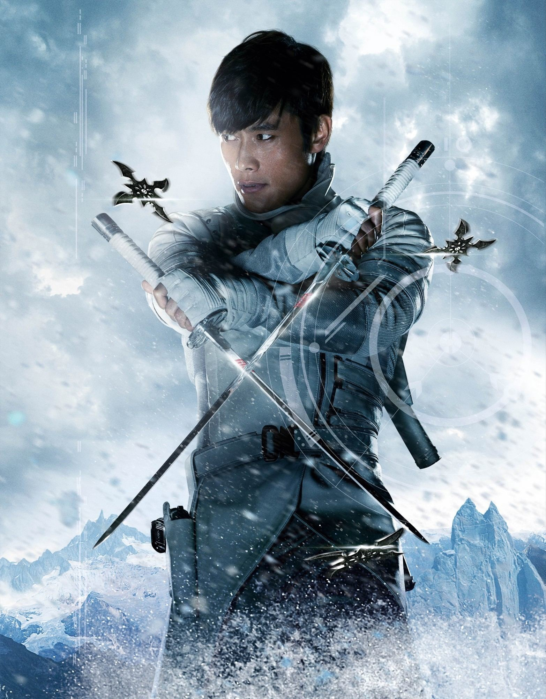

"Fear is the best motivator."
Storm Shadow

Biography
The real name of the ninja, nicknamed Storm Shadow, is not exactly known, according to some sources, the name of the warrior is Tomisaburo "Tommy" Arashikage. Tommy grew up in his hereditary ninja clan, studying with one of the elders of the clan, his uncle and guardian - Hardmaster. Once as a child, on a rainy evening, Tomisaburo caught a homeless boy of the same age in the kitchen of the clan stealing food. Deciding that the thief needed to be punished, Storm Shadow attacked the boy and began to dominate, beating him, although the homeless man was able to fight back somehow. The Hardmaster condemned Tommy's actions and demanded to be more hospitable. On that day, the boy was accepted into the Arashikage clan and received the nickname Snake Eyes. The boys grew up as brothers in the clan and, despite the rivalry, recognition grew into respect and even a semblance of friendship, albeit restrained. At first, Storm Shadow constantly defeated Snake Eyes, but over time, the newcomer began to gain experience and skills, even defeating Tommy. One fateful day, the Hardmaster was killed by Storm Shadow's sword, the boy was frightened, realizing that he would be accused of murder and, running away, the last thing Tommy saw was the body of the Hardmaster in the arms of Snake Eyes. Storm Shadow grew up to be a mercenary and began working for the terrorist organization Cobra in order to find the master's real killer and clear his name.
Strength
- Low-meta human physical strength
- Can cut bullets and weapons with katana
- Extreme agility and parkour movement
Speed & Reflexes
- Can reach extreme sprint speeds
- Bullet-level reaction timing
- Master of acrobatics and stealth movement
Endurance
- High pain tolerance
- Survived extreme injuries and trauma
- Peak human durability
Skills
- Master of Ninjutsu
- Arashikage elite training
- Expert assassin and infiltrator
Equipment
- Dual katana (Arashikage forged)
- Shurikens
- SIG-Sauer P226 pistol